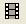

- 標準ツールバーにあるビデオビルダボタンをクリックします。
- 作成する動画のファイル名を入力し、その場所をブラウズします。
- 開始ボタンをクリックして、グラフを追加します。
- 追加ボタンをクリックし、アクティブなグラフを動画の新規フレームとして追加します。
- 完了ボタンをクリックしてレコードを終わりにし、先程指定したファイル保存場所に動画ファイルを保存します。
目次 |
グラフアニメーションは、一連のグラフの傾向を示したり、リアルタイムの分析やグラフ結果の比較などが可能です。Originでは、手動でグラフを選択していったり、プログラミングでデータを更新し、アニメーションを作成できます。
ビデオビルダを使用すると、一連のグラフウィンドウを手動でキャプチャし、これらを動画ファイル(.AVI)として1つのフレームにまとめることができます。
|
LabTalkスクリプトやOriginCコードを使用すれば、計算され、更新されるデータをステップごとにキャプチャし、動画を作成可能です。
|
プログラミングにより動画を作成するための、コードやOriginプロジェクトを含むサンプルがアニメーションギャラリーで利用可能です。 |
このダイアログは作成する動画のファイル名と保存場所を初めて指定した時に表示します。
ファイル名ボックス内に表示されるテキストは、作成される動画ファイルのパスと名前を表示します。この両方は、直接入力したりテキストボックス右側にあるファイルのブラウズボタン をクリックすると編集できます。
ダイアログ内には3つのボタンがあります。
| 設定 | 動画設定ダイアログを開きます。 |
|---|---|
| 開始 | グラフをフレームとして追加する操作を開始します。 |
| キャンセル | 動画を作成せずに、ダイアログを閉じます。 |
開始ボタンをクリックすると、ビデオビルダーダイアログは縮小化し、グラフをフレームとして追加する事ができます。
タイトルバーには追加された現在のフレーム/グラフ数が表示されます。1つ以上のグラフが追加された場合、最後に追加されたグラフのウィンドウ名も表示されます。
ダイアログ内には3つのボタンとドロップダウンリストがあります。
| 取得するグラフ | アクティブフォルダの中で追加したいグラフウィンドウを選択します。デフォルトは現在にセットされているので、グラフウィンドウを直接クリックしてグラフを追加します。 |
|---|---|
| 追加(または、Qキーを押す) | アクティブなグラフウィンドウを現在の動画のフレームとして追加します。また、ホットキーであるQキーを押すとフレームを追加できます。 |
| 完了 | グラフを追加するプロセスを終了し、動画を作成します。 |
| キャンセル | 動画を作成せずに、ダイアログを閉じます。 |
| Note:これはモードレスダイアログです。他のフォルダをブラウズしたり、他のOriginプロジェクトを開いて他のグラフウィンドウをアクティブにできます。 |
このダイアログは動画の設定をする為に使用します。
| 動画の幅(ピクセル) | 動画の幅をピクセルで指定します。デフォルトは800です。 |
|---|---|
| 動画の高さ(ピクセル) | 動画の高さをピクセルで指定します。デフォルトは600です。 |
| 縦横比を維持 | グラフのアニメーションを作成している時に縦横比を維持するか指定します。 |
| 位置合わせ | ビデオの整列の方法を指定します。デフォルトは中央です。整列方法は上/左または下/右も選択できます。 |
| 秒間フレーム(1～120) | 1秒間ごとのフレーム数を指定します。デフォルトは1で、範囲は0.001から120の間で指定できます。
Note:秒間フレームが1より小さい場合、圧縮手法のうちいくつかだけサポートされます。 |
| 圧縮 | 作成した動画の圧縮方法を指定します。デフォルトは無圧縮で、他のオプションはコンピュータの環境によって自動検出され、表示されます。 |